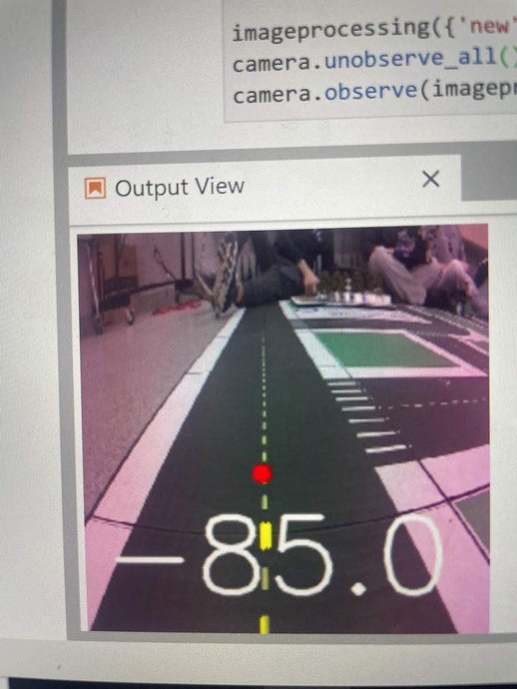
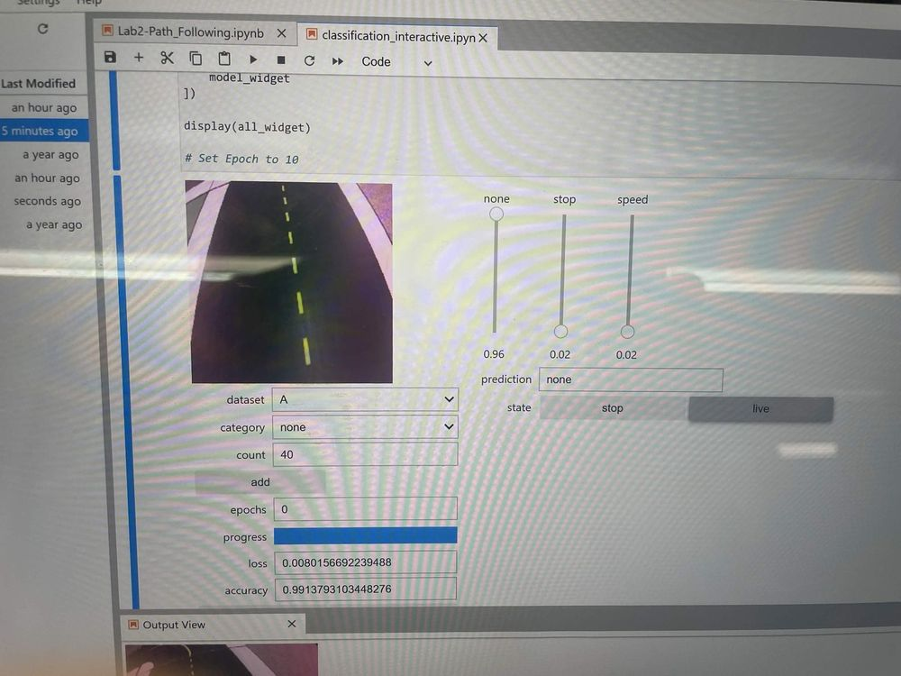
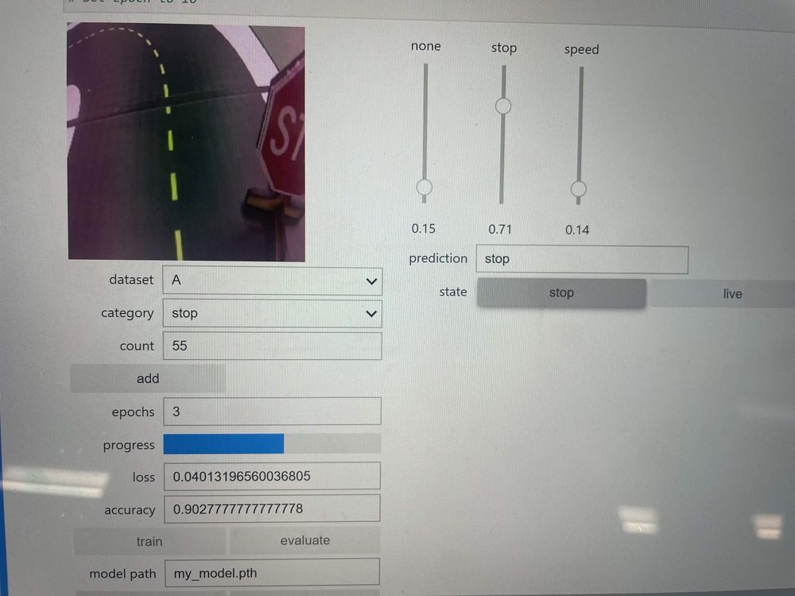

Perception & Autonomy
Autonomous Line-Following Robot
Self-driving vehicles must stay in their lane and obey road signs using what their cameras see. This project’s objective was to make a small prebuilt mobile robot drive a road course on its own, following the lane line and responding to signs and intersections. I programmed the robot directly on its onboard Linux computer over SSH, rather than in simulation, and steered it by tracking the yellow lane line in the onboard RGB camera image (Figure 1). For signs, I used an interactive notebook on the robot to collect labeled camera images, train a PyTorch classifier to separate plain road, stop signs, and speed-limit signs, and run it live (Figure 2); each detected sign, turn, or intersection then triggered the matching behavior of stopping, changing speed, or turning. In live tests, the classifier reported plain road at 0.96 confidence (Figure 2) and recognized a stop sign at 0.71 (Figure 3), after training on 55 stop-sign examples that reached 90.3% training accuracy in 3 epochs (Table 1). The lower confidence on stop signs than on plain road points to the small dataset as the main limit, so more varied examples would make the robot’s responses to signs more reliable.



| Measure | Result |
|---|---|
| Plain road in view | Predicted none, 0.96 confidence |
| Stop sign in view | Predicted stop, 0.71 confidence |
| Stop-sign training examples | 55 |
| Training | 3 epochs, 90.3% training accuracy |